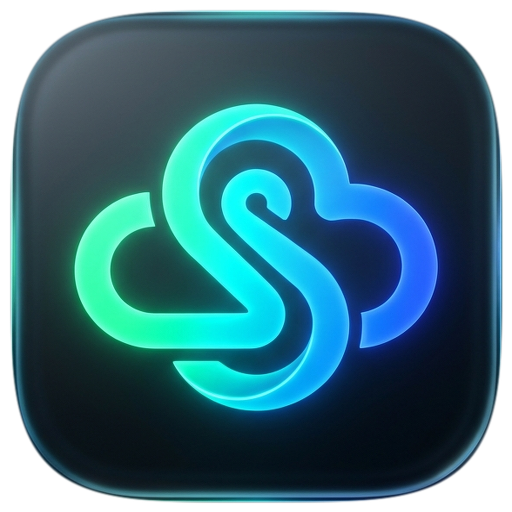
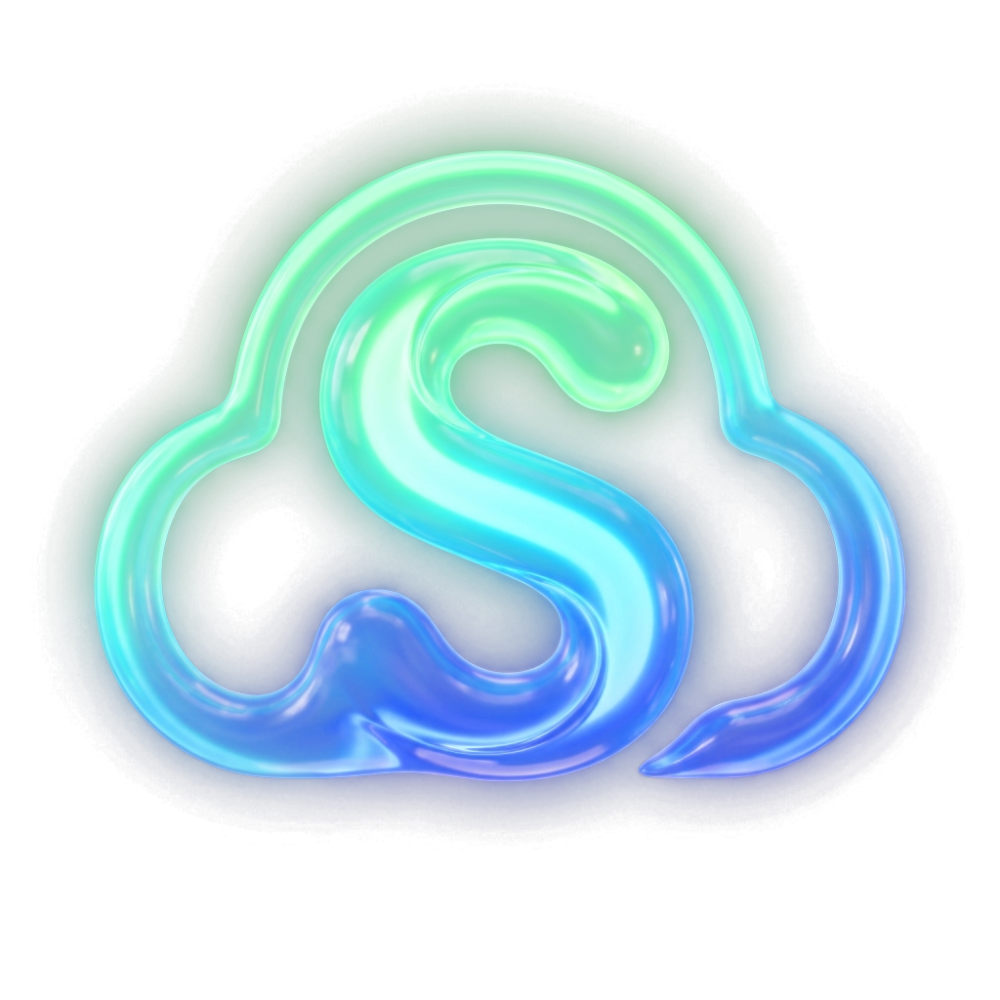
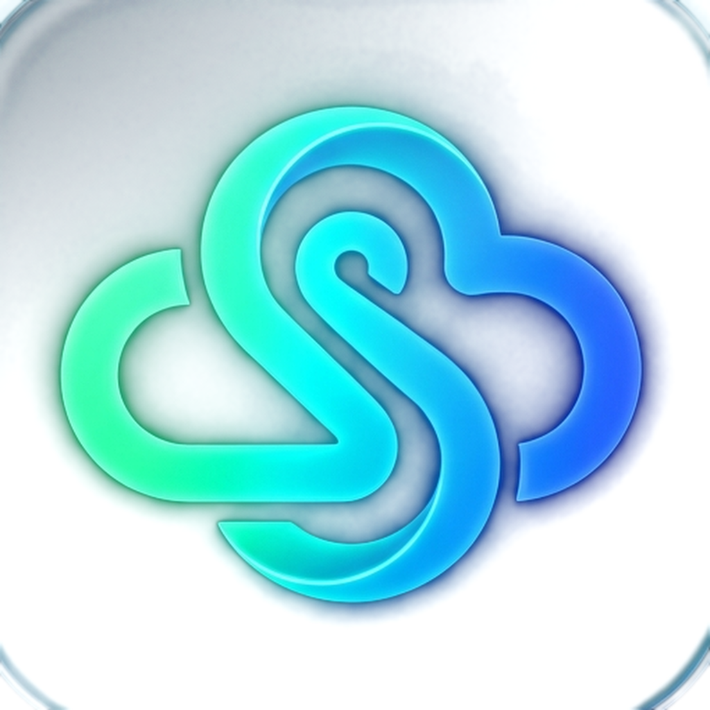
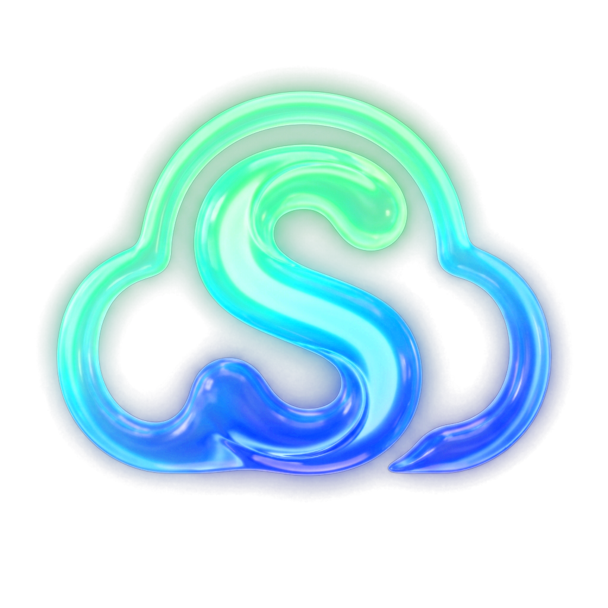
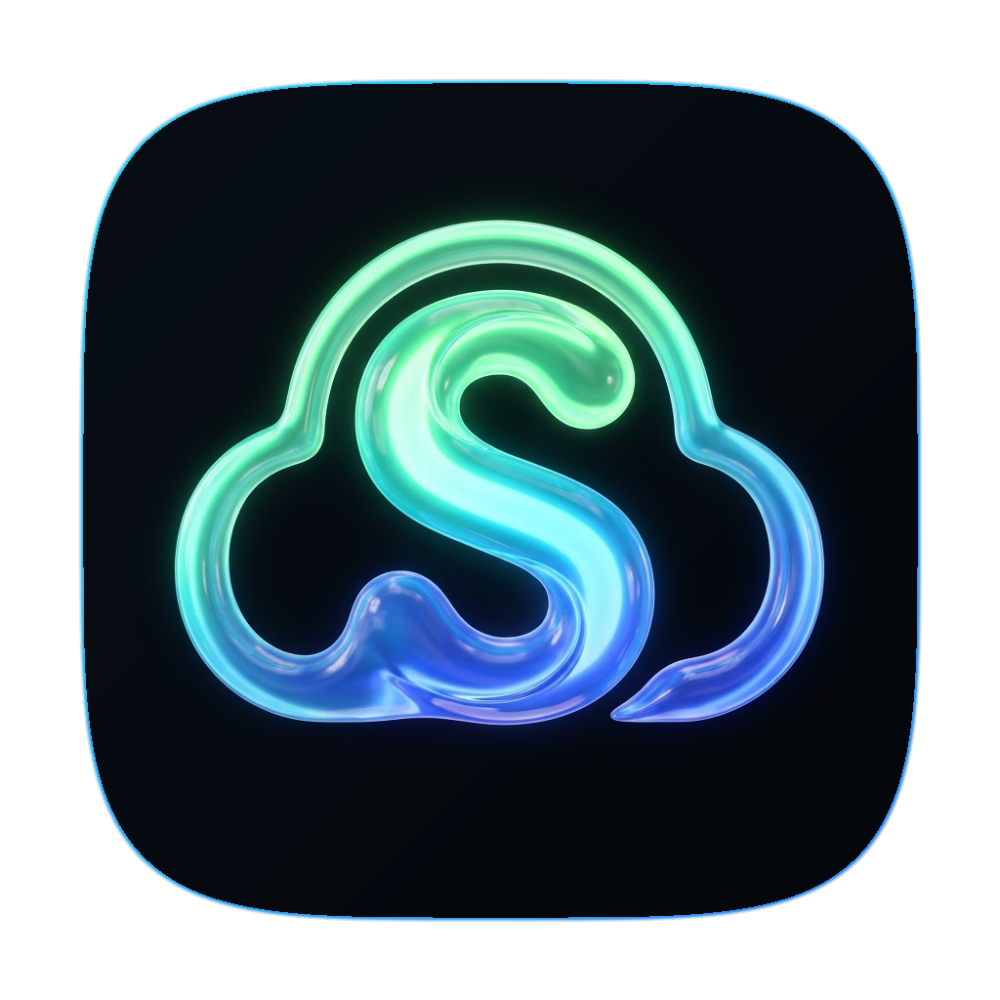
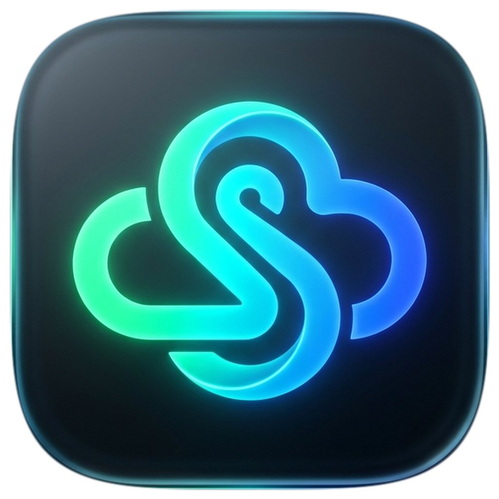
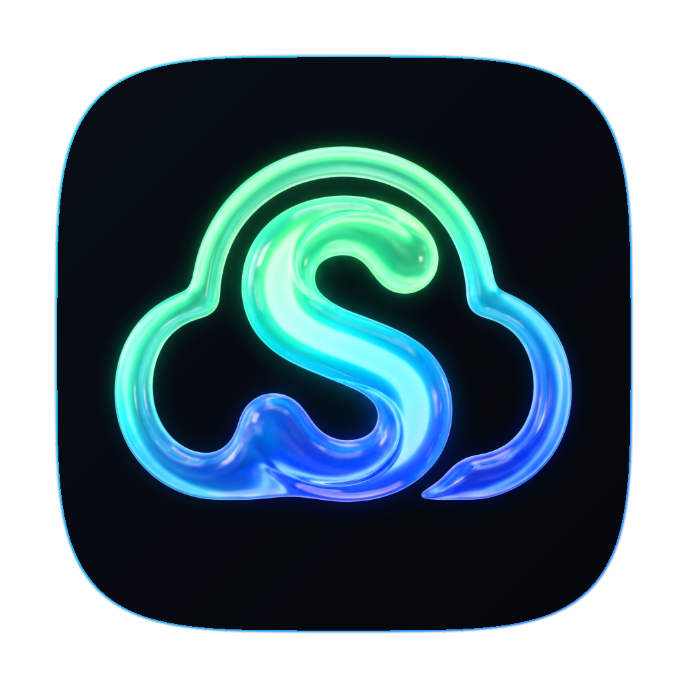

Концепция полностью сохранена. Сформированы два типа файлов: (1) Без фона — только парящая буква S и облако, и (2) В скругленном квадрате — с прозрачностью вокруг самого сквиркла.

Текучая неоновая лента Мебиуса, соединяющая облако и литеру «S». Высочайший контраст, премиальное дымчатое стекло и идеальное соответствие лендингу.





